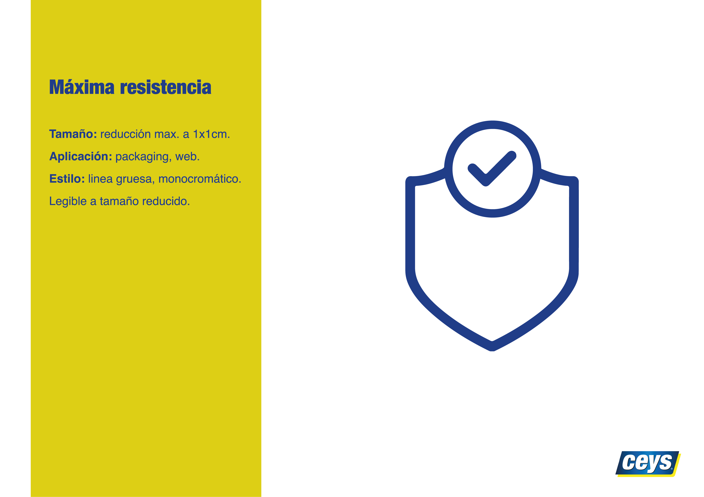
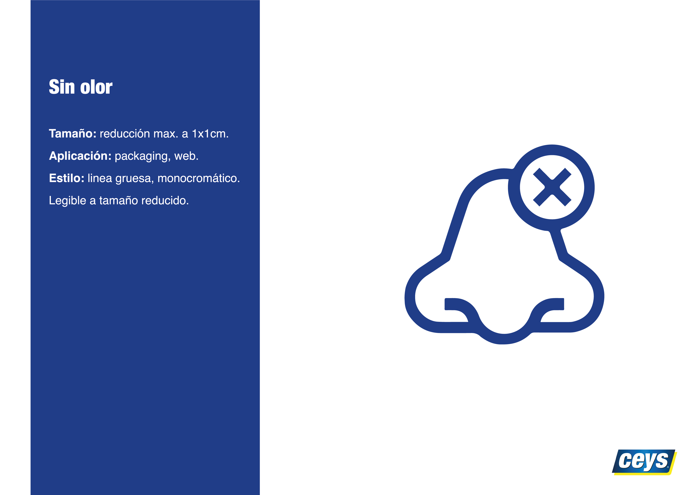
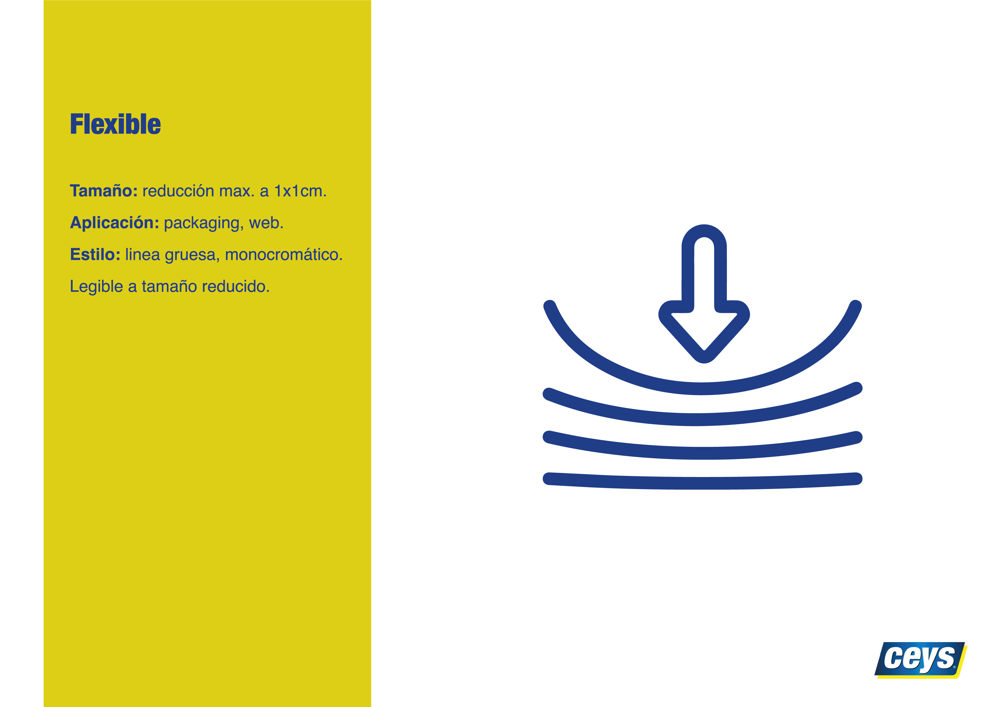

Pictogramas para Ceys
Sistema visual desarrollado para la marca Ceys, con el fin de mejorar la comunicación en envases y materiales gráficos mediante pictogramas claros, minimalistas y coherentes.

Descripción
El reto consistió en diseñar una colección de pictogramas que representaran de forma visual las propiedades y usos de los productos Ceys. La propuesta se centró en un estilo minimalista, con líneas uniformes y geometría sencilla, asegurando la legibilidad en distintos tamaños y soportes.
Proceso Creativo


